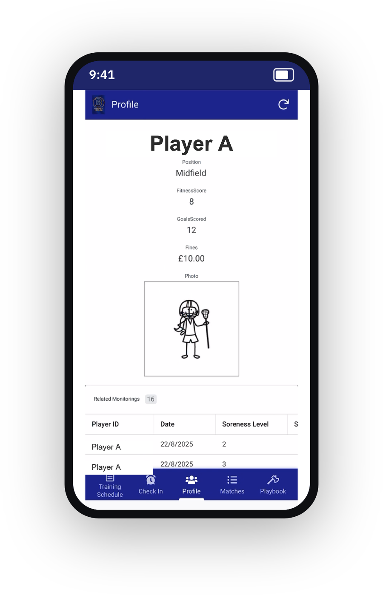
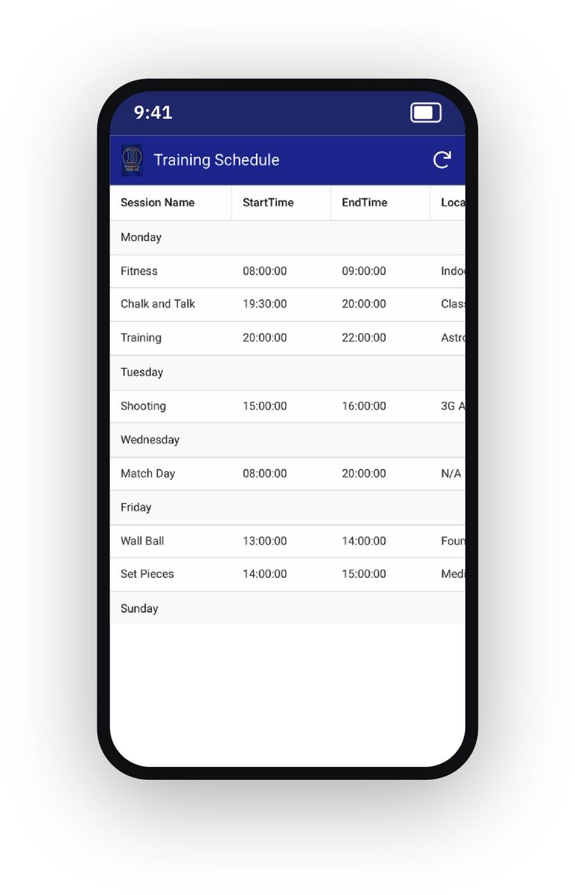
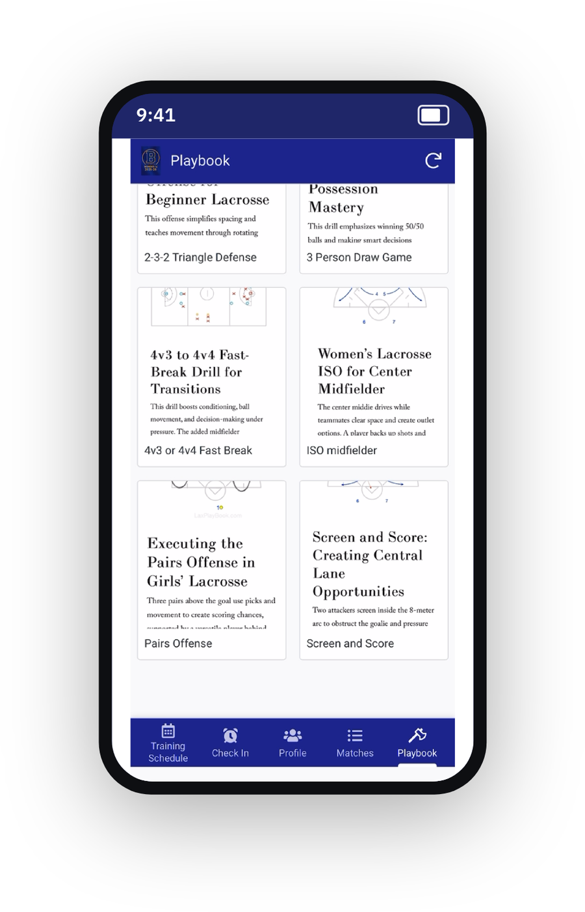
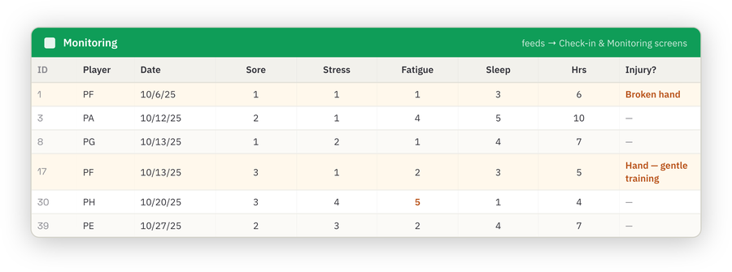
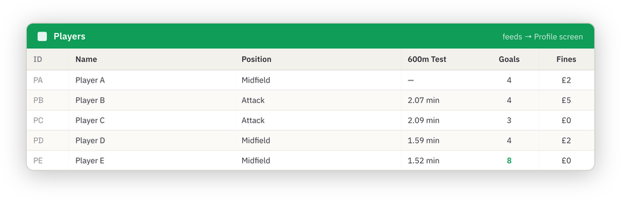

Lacrosse Team Performance App
A working mobile app I built to run a university women’s lacrosse squad in one place — training schedule, daily athlete check-ins, player profiles, matches and a coaching playbook, all driven by a relational data backend.
The brief
A student sports team runs on scattered group chats and spreadsheets — the schedule in one place, wellness check-ins in another, drills nowhere. I built a single app that pulls it together and, crucially, captures athlete-monitoring data the coaches can actually use.
The app gives every player five things in their pocket: this week’s sessions, a 30-second daily check-in, their own profile and stats, upcoming matches, and the coaching playbook. Behind it sits a relational data model that turns each of those into a live screen.
The app
Five screens, each reading from its own data table. The check-in feeds a monitoring log; profiles pull a player’s stats and their linked check-in history; the playbook stores drills with diagrams the coaches can pull up pitch-side.




The data model behind it
The app is only as good as its data design. I modelled the squad as linked tables — a Players table and a Monitoring table — each feeding a specific screen, with a relationship so a player’s profile can show their own 16 related check-ins. That relational thinking is the same skill that underpins any BI model or analytics pipeline.


Why it belongs in a data portfolio
This is where the collection meets the analysis. The daily check-in captures exactly the inputs — soreness, stress, fatigue, sleep — that the Readiness & Recovery project turns into a monitoring score. One project gathers athlete-monitoring data at source; the other interprets it. Together they show the full loop a performance department runs on.
- Relational data modelling — normalised tables with a real player-to-monitoring relationship.
- End-to-end delivery — from data design to a working app in players’ hands.
- Adoption-first design — a check-in has to be fast, or athletes won’t do it; the data is only as good as compliance.
I don’t just analyse athlete-monitoring data — I’ve built the system that collects it, and understand the data model from the first check-in to the final report.